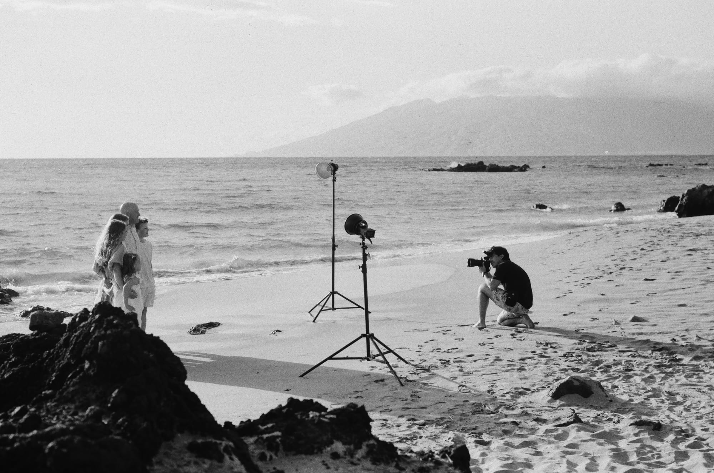

Where to park for a sunset session at Mokapu Beach.
A practical, no-surprises guide to parking, finding the beach, and arriving ready for beautiful evening light.
BY LAURENCE BALTER · FOUNDER & LEAD PHOTOGRAPHER, WAILEA PHOTO
Meet us at Mokapu Beach beside the Andaz Maui.
Park in the public beach parking lot. From the parking lot, walk toward the outdoor showers. At the showers, turn right—not left—and follow the ramp all the way down past the Andaz Maui. Continue across the boardwalk to Mokapu Beach.
Please allow enough time to park and walk to the beach before your scheduled start. Sunset light will not wait for us.

A few details make the evening easier.
- Bring one easy-to-carry bag. A backpack or purse keeps phones, keys and personal items together while we move along the beach.
- Remove hotel wristbands and sunglasses. Leave them safely in your bag before we begin.
- Plan for wind. Ladies may want to bring a hair band or wear a braid if the trade winds are active.
- Reduce shine. Translucent or matte powder is helpful for minimizing glare and bright hotspots on the skin.
- Press clothing before arriving. Gentlemen, please iron or steam shirts and trousers. Wear your portrait clothing to the beach rather than planning to change there.
- Bring a towel. We may finish near the water, and you may get a little wet. It is a beach, after all.

Relax. You are already in the right place.
If you arrive well ahead of your session, the Andaz Maui is next to the beach. You may relax with a drink and use the clean restrooms downstairs before walking out to meet us.
Keep an eye on the time and begin the walk to Mokapu Beach early enough to be ready at your scheduled start. The final minutes before sunset change quickly, and arriving prepared lets us use every part of that light.
What people ask before a sunset session.
Where do I park for Mokapu Beach?
Use the public beach parking lot beside the Andaz Maui. Walk to the showers, turn right, follow the ramp past the resort, cross the boardwalk, and continue to Mokapu Beach.
Will our session always be at Mokapu Beach?
Mokapu Beach is our default sunset location. If weather, tides or beach conditions are not favorable, we will text you with the new location.
What should we carry onto the beach?
Bring one backpack or purse for phones, keys, sunglasses, hotel wristbands and other personal items. A towel is also useful because we may finish close to the water.
Can we change clothes at the beach?
We recommend arriving in the clothing you want photographed. Beach changing areas are limited, and beginning on time protects the best evening light.